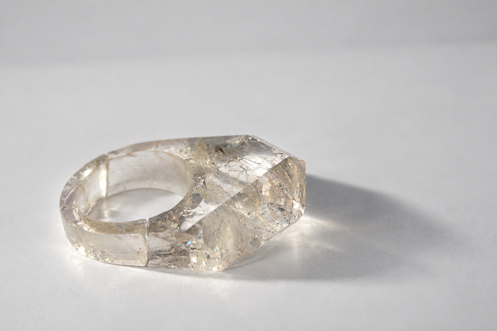
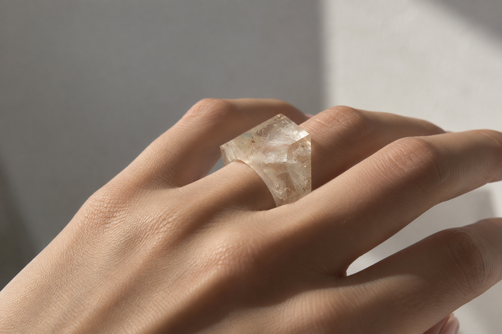
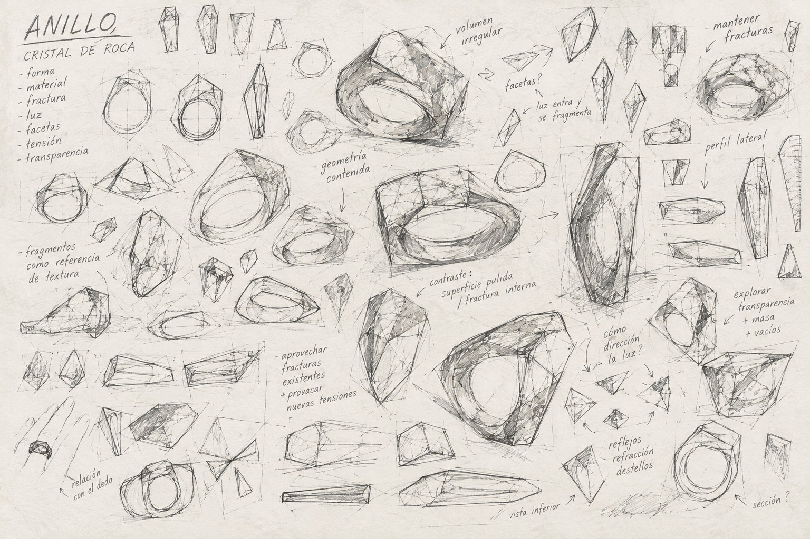
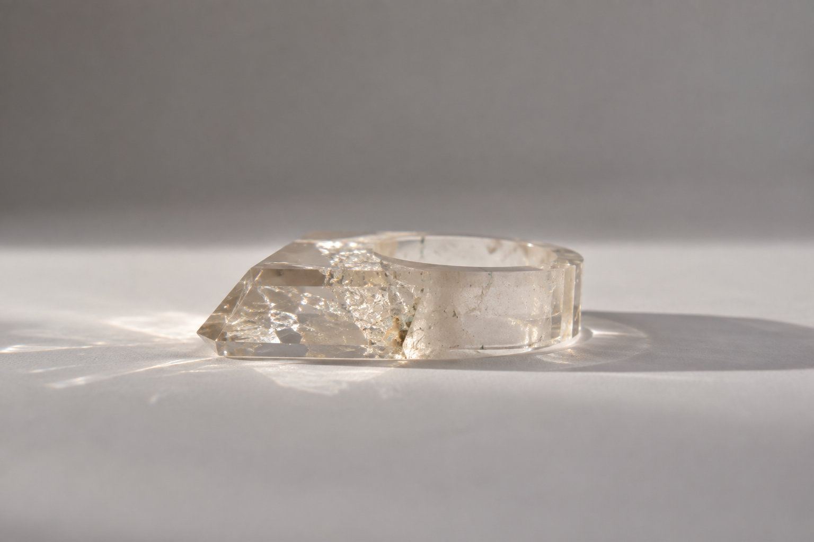
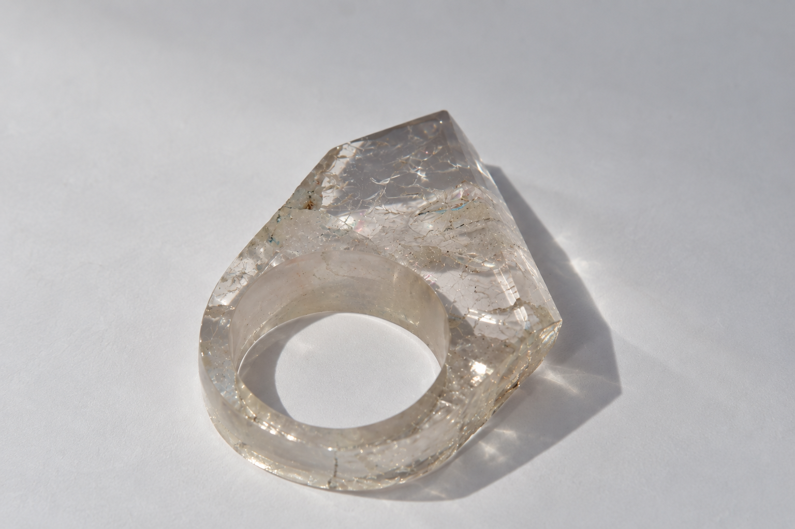
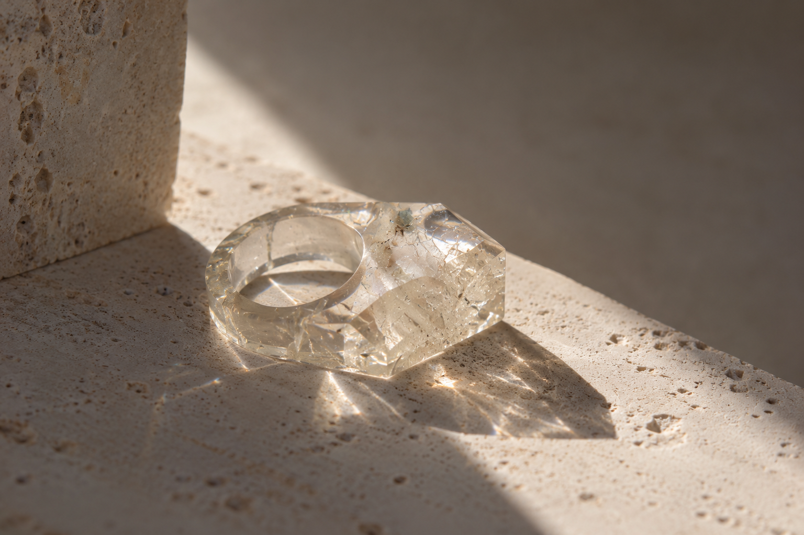
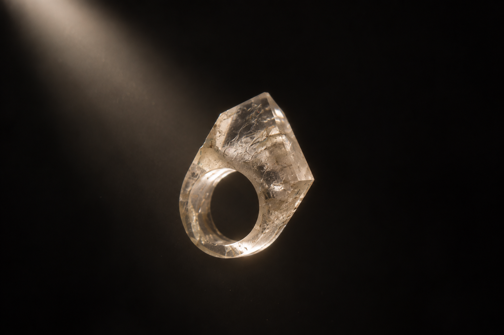
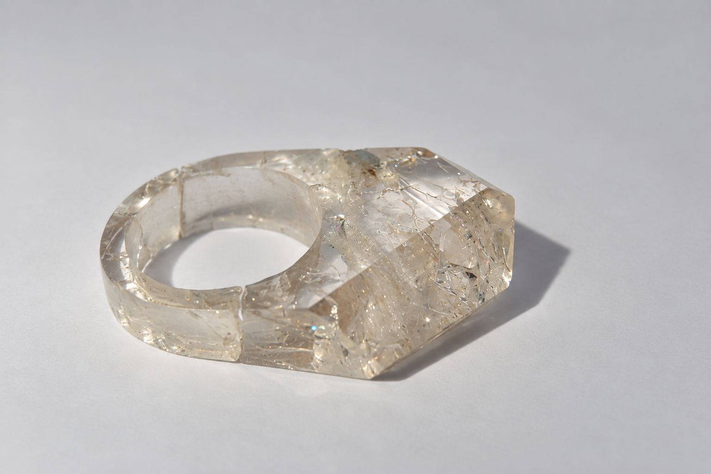

LATENT

01 — CONCEPTO
NO QUERÍA REPARAR LAS FRACTURAS. QUERÍA MÁS.
El proyecto comenzó con una pieza de cristal de roca en bruto y una inversión sencilla: en lugar de tratar las fracturas internas como daños, quería convertirlas en una parte activa del anillo. No solo aceptarlas, sino intensificarlas deliberadamente.
El control se utiliza para crear lo que normalmente evitaría.


02 — PROCESO
DEL CRISTAL EN BRUTO A LA FRACTURA CONTROLADA.
El anillo se cortó a partir de cristal de roca en bruto, se conformó y perforó, se facetó para crear planos controlados, se sometió a contrastes térmicos controlados para favorecer las fracturas internas y, finalmente, se pulió para aclarar el exterior manteniendo visibles las discontinuidades internas.


03 — EL MATERIAL COMO INTERFAZ
LO QUE OCURRE ESTÁ DENTRO.
Las facetas dan al exterior del anillo una geometría deliberada. Las fracturas alteran ese orden desde dentro. La reflexión y la refracción en los planos pulidos y las discontinuidades internas crean destellos cambiantes al mover la pieza.
El efecto óptico no es un acabado aplicado. Es una consecuencia directa de la transformación del material.



04 — INTERRUPCIÓN CONTROLADA
CONOCER EL MATERIAL LO SUFICIENTE PARA ALTERARLO.
La formación previa en ingeniería influyó en el enfoque del cristal: no como una superficie pasiva, sino como un material cuyo comportamiento podía orientar la decisión de diseño. La intervención es deliberada, aunque el recorrido interno exacto de cada fractura sigue siendo parcialmente incierto.


05 — OBJETO
LATENT / ANILLO DE CRISTAL DE ROCA
Material: cristal de roca. Proceso: corte, conformado, perforación vertical, facetado, contraste térmico controlado, fracturación y pulido. Autoría: diseñado y fabricado íntegramente por Natalia Antelo Cubría.
La fractura no es lo que queda después del diseño. Es parte del diseño.